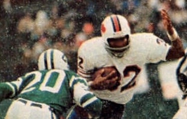

Simpson gained 11,236 rushing yards, placing him 2nd on the NFL's all-time rushing list when he retired; he now stands at 21st. He was named NFL Player of the Year in 1973, and played in six Pro Bowls. He was the only player in NFL history to rush for over 2,000 yards in a 14-game season and he's the only player to rush for over 200 yards in six different games in his career. From 1972 to 1976, Simpson averaged 1,540 rushing yards per (14 game) season, 5.1 yards per carry, and he won the NFL rushing title four times. Simpson was inducted into the Pro Football Hall of Fame in 1985, his first year of eligibility. Simpson played in only one playoff game during his 11-season Hall of Fame career: a 1974 Divisional Playoff between the Buffalo Bills and the Pittsburgh Steelers. Simpson was held to 49 rushing yards, 3 receptions for 37 yards, and one touchdown, and the Bills lost 14-32 to the team which went on to win Super Bowl IX.
Simpson acquired the nickname "Juice" as a play on "O.J.", a common abbreviation for "orange juice". "Juice" is also a colloquial synonym for electricity or electrical power, and hence a metaphor for any powerful entity; the Bills' offensive line at Simpson's peak was nicknamed "The Electric Company."

information from wikipedia